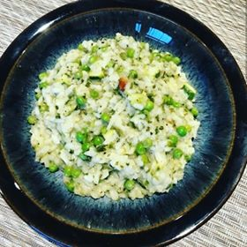
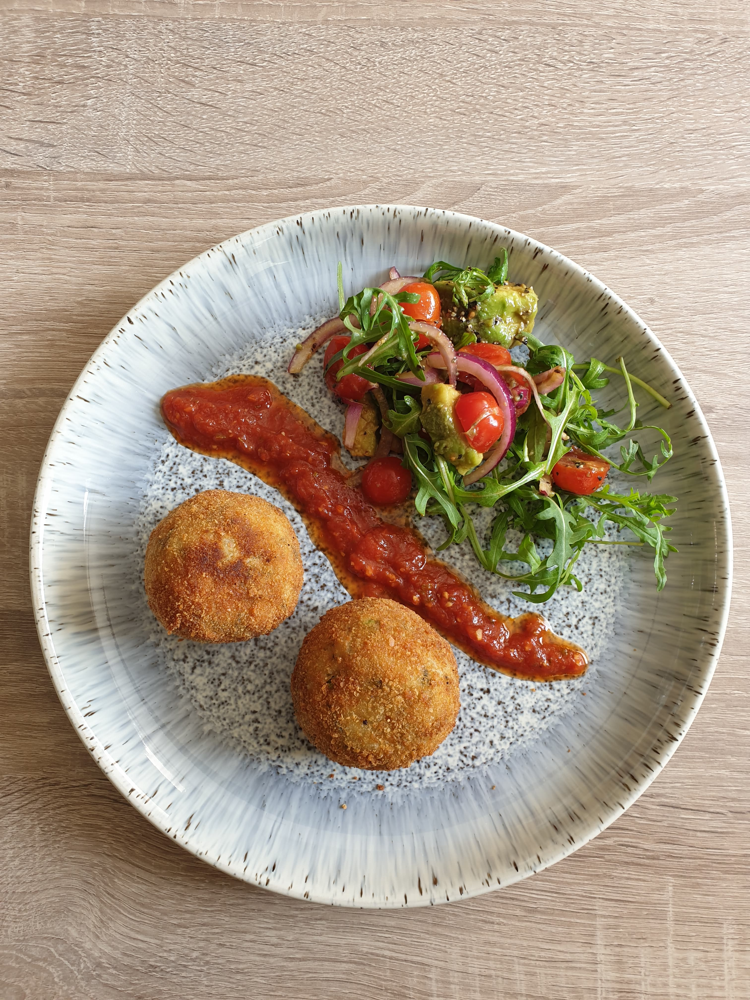

COOKING
When you can't travel the world, bring the world to you! Have a go at following some of our simple, global and nutritional recipes, which promise to not only make you feel good, but also transport you to somewhere far away. Add your own twists, take photos, and share your suggestions by getting in touch. Motivate your inner chef, take inspiration from others, and most importantly, have fun!
COURGETTE AND PEA RISOTTO

INGREDIENTS
- 1 onion
- 50g butter
- 300g risotto rice
- 200ml dry white wine
- 1 vegetable stock cube
- 1.5l water
- 200g courgette
- 200g peas
- 3 tbsp cheese
- Desired amount salt
- Desired amount pepper
TOP TIP

Don't worry if you have leftover risotto - this is perfect for making arancini the next day!
METHOD
- Dice the onion finely.
- Place the butter in a deep frying pan and then fry and sweat the onion.
- Stir in the risotto rice and coat in the buttery onion.
- Add the white wine to the pan.
- Dissolve the stock cube in the water in a separate utensil.
- Ladle the stock into the pan, waiting for it to dissolve each time before adding in the next ladle. Stir constantly while rice becomes softer and fluffier. This process should take about 20 minutes.
- Dice the courgette before tipping it into the pan with the peas and the remaining stock.
- Season with salt and pepper, before adding and stirring in cheese.
- Leave to stand or serve immediately.
RATING